Funciones y Clases#
En esta sección se resumen las funciones y clases relacionadas con la interface por funciones.
Categóricas#
Funciones para graficar variables categóricas, incluyendo gráficas de barras, boxplots, gráfica de puntos, gráfica de recuentos, gráficas de violines y de panales, etc. Existe la gráfica a nivel de figura y varias a nivel de ejes.
Figure level
Función |
Descripción |
|---|---|
catplot(data=None, …) |
Interfaz a nivel de figura para crear gráficos categóricos en un |
Parámetros:
x, y -
array-likeostr: Pueden ser vectores o etiquetas en data, que especifican los valores en los ejes x y y respectivamente. Una de ellas debe de ser una variable categórica. Dependiendo de en cuál eje se haya puesta la variable categórica la gráfica será horizontal o vertical.data -
DataFrame,ndarray,mappingosecuencia: Estructura de datos de entrada.kind -
str: Para especificar el tipo de gráfica:.Dispersión: ‘strip’, ‘swarm’.
Distribución: ‘boxplot’, ‘violinplot’, ‘boxenplot’.
Estimación: ‘pointplot’, ‘barplot’, ‘countplot’.
hue -
array-likeostr: Pueden ser vectores o etiquetas en data, es una variable categórica que es mapeada para determinar el color de los elementos de la gráfica.hue_order -
array-likedestr: Para indicar el orden de las categorías del argumento hue. Deben de ser los valores únicos ordenadas en orden que prefieras de hue.row, col -
array-likeostr: Pueden ser vectores o etiquetas en data, es una variable categórica para crear subplots de acuerdo a los valores de ésta. Si se usan ambos se creará una matriz.col_wrap -
int: Para indicar un número máximo de columnas de gráficas a realizar, si se supera se crearán filas. Es incompatible con el argumento row.estimator -
callable: Una función que de entrada reciba unvectory retorne unscalar. Pueden ser métodos deDataFRamecomo mean, median, etc.ci -
float: Tamaño del intervalo de confianza al agregar un estimator.order -
listdestr: Para modificar el orden de las categorías. Debe ser una lista con las categorías únicas ordenas en el orden deseado.col_order, row_order -
array-likedestr: Los elementos de la columna/fila para indicar cómo ordenar cada uno de los valores.height -
scalar: Altura de cada facet en pulgadas.aspect -
scalar: Radio entre la altura y ancho de cada facet en pulgadas.orient - {‘v’, ‘h’}: Orientación de la gráfica.
color -
color: Color de todos los elementos.palette -
string,list,dictomatplotlib.colors.Colormap: Métodos para escoger la paleta de colores, cuando se mapea con base a hue.legend -
bool: Para indicar si mostrar una leyenda.
Patrones útiles.
# Uso de función a nivel de figura
sns.catplot(x, y, [data], [kind], [col], [row])
# Modificar orden de las categorías
category_order=['cat1', 'cat2', ...]
sns.catplot(x, y, [data], [kind], [col], [row], order=category_order)
Axes level
Función |
Descripción |
|---|---|
barplot(data=None, …) |
Realiza una gráfica de barras, sumariza los datos con un aggregate (media por default) y añade error bars con un intevarlo de confianza del 95%, de acuerdo a los valores de una variable categórica. |
boxenplot(data=None, …) |
Grafica un diagrama de caja mejorado para conjuntos de datos más grandes y permite visualizar de mejor manera la distribución de los datos. |
boxplot(data=None, …) |
Grafica un boxplot, para mostrar la distribución de acuerdo a los valores de una variable categórica. |
countplot(data=None, …) |
Genera una gráfica de barras, donde la altura de la barra será el número de veces que se repite cada categoría en toda la columna, de acuerdo a los valores de una variable categórica. |
pointplot(data=None, …) |
Grafica estimaciones puntuales y errores usando líneas con marcadores por categorías. |
stripplot(data=None, …) |
Grafica una diagrama de dispersión donde una de las variables es categórica, utilizando jitter para reducir marcas superpuestas. |
swarmplot(data=None, …) |
Grafica un diagrama de dispersión donde una de las variables es categórica. Es similar a |
violinplot(data=None, …) |
Grafica una combinación entre un boxplot y una estimación de la densidad del kernel. |
Parámetros comunes:
x, y -
array-likeostr: Pueden ser vectores o etiquetas en data, que especifican los valores en los ejes x y y respectivamente. Una de ellas debe de ser una variable categórica. Dependiendo de en cuál eje se haya puesta la variable categórica la gráfica será horizontal o vertical. Algunas gráficas aceptan solo uno de los dos y otras los dos.data -
DataFrame,ndarray,mappingosecuencia: Estructura de datos de entrada.hue -
array-likeostr: Pueden ser vectores o etiquetas en data. Es una variable categórica que es mapeada para determinar el color de los elementos de la gráfica, estableciendo la leyenda de la gráfica.order -
listdestr: Para modificar el orden de las categorías. . Deben de ser los valores únicos ordenados en orden que se prefierahue_order -
array-likedestr: Para indicar el orden de las categorías del argumento hue. Deben de ser los valores únicos ordenados en orden que se prefiera de hue.orient - {‘v’, ‘h’}: Orientación de la gráfica.
color -
color: Color de todos los elementos.
Patrones útiles.
# Uso de función a nivel de ejes
sns.function_name([x], [y], [data])
# Modificar orden de las categorías
category_order=['cat1', 'cat2', ...]
sns.function_name([x], [y], [data], order=category_order)
Ejemplo de bar#
barplot: Realiza una gráfica de barras, sumariza los datos con un aggregate (media por default) y añade error bars con un intevarlo de confianza del 95%, de acuerdo a los valores de una variable categórica.
Tip
Para cambiar la orientación de las barras intercambiar los argumentos x y y.
Patrones comunes:
# Modificar el estimador (por default media)
sns.barplot(x='x', y='y', data=data, estimator=median)
# Modificar intervalos de confianza
sns.barplot(x='x', y='y', data=data, estimator=('ci', 95))
Notas:
estimator -
pandas methodocallable: Una función que de entrada reciba unarray-likey retorne unscalar. Puede ser un método de data como mean, median, etc.errorbar -
str,tuple,callableoNone: Tipo de barras de errores.str- {‘ci’, ‘pi’, ‘se’, or ‘sd’}: Nombre del método.tuple: Tupla de dos elementos con el nombre del método y el nivel del parámetro, por ejemplo('ci', 95), es un intervalo de confianza del 95%.callable: Función que recibe unarray-likey retorna un tuple(min, max)con el intervalo.None: Para ocultar las barras de errores.
En este ejemplo de gráfica la media de bill_length_mm para cada species.
# Importar el dataset iris
penguins=sns.load_dataset("penguins")
# Definir graficar
sns.barplot(x="species", y='bill_length_mm', data=penguins, color=azul)
# Equivale a: sns.catplot(x="species", y='bill_length_mm', data=penguins, kind="bar")
# Imprimir gráfica
plt.show()
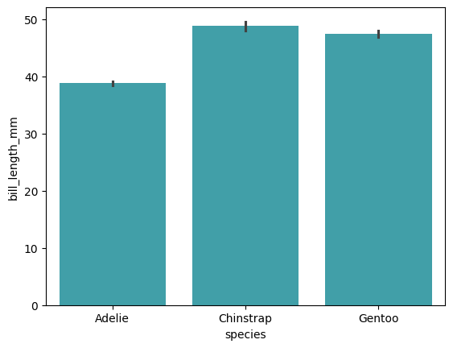
Ejemplo de box#
boxenplot: Grafica un boxplot, para mostrar la distribución de acuerdo a los valores de una variable categórica.
Tip
Para cambiar la orientación de las barras intercambiar los argumentos x y y.
Patrones útiles:
# Omitir datos atíplicos
sns.boxplot(x='x', y='y', data=data, sym="")
# Modificar orden las categorías
category_order=['cat1', 'cat2', ...]
sns.function_name(x='x', y='y', data=data, order=category_order)
# Modificar los "bigotes"
sns.boxplot(x='x', y='y', data=data, whis=[q1, q2])
Notas:
whis -
floatolist: Proporción del IQR, para indicar el rango máximo de los bigotes del boxplot, por default es1.5*IQR. Los puntos fuera de este rango serán considerados outliers. Si se quieren incluir todos los datos usar np.inf o[0, 100]. Se puede indificar percentiles específicos con una lista de dos elementos, por ejemplo[5, 95], mostraría hasta los percentiles 5 y 95.
En este ejemplo de grafica la distribucipon de total_bill para cada day.
# Importar el dataset tips
tips=sns.load_dataset("tips")
# Definir graficar
sns.boxplot(x="day", y='total_bill', data=tips, color=azul)
# Equivale a: sns.catplot(x="day", y='total_bill', data=tips, kind="box")
# Imprimir gráfica
plt.show()
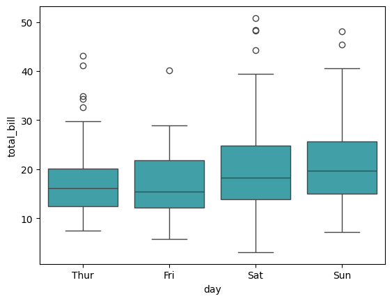
Ejemplo de countplot#
countplot: Genera una gráfica de barras, donde la altura de la barra será el número de veces que se repite cada categoría en toda la columna, de acuerdo a los valores de una variable categórica.
Tip
Para cambiar la orientación de las barras utilizar el argumento y en lugar de x, o viceversa.
Caution
Solo se debe de especificar uno de los parámetros x o y, no ambos.
En este ejemplo de grafica la cantidad de observaciones para cada species.
# Importar el dataset iris
penguins=sns.load_dataset("penguins")
# Definir graficar
sns.countplot(x="species", data=penguins, color=azul)
# Equivale a: sns.catplot(x="species", data=penguins, kind="count")
# Imprimir gráfica
plt.show()
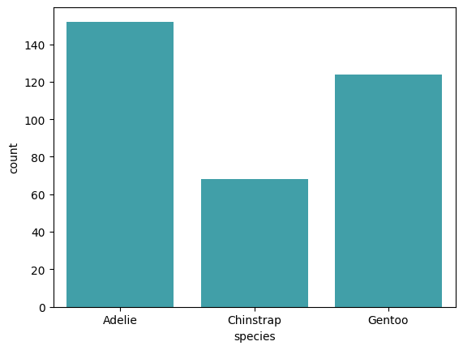
Ejemplo de swarmplot#
swarmplot: Grafica un diagrama de dispersión donde una de las variables es categórica. Es similar a sns.stipplot(), la diferencia es que distribuye los puntos a lo largo del eje categórico de manera de éstos no se sobreencimen y permite una mejor visualización de la distribución de los valores.
En este ejemplo de gráfica la distribución de total_bill para cada day.
# Definir grafica
sns.swarmplot(x="day", y='total_bill', data=tips, color=azul)
# Equivale a: sns.catplot(x="day", y='total_bill', data=tips, kind="swarm")
# Imprimir gráfica
plt.show()
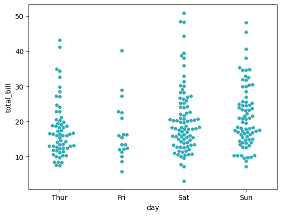
Distribución#
Funciones útiles para visualizar la distribución de los datos. Existe la gráfica a nivel de figura y varias a nivel de ejes.
Figure level
Función |
Descripción |
|---|---|
displot(data=None, …) |
Interfaz a nivel de figura para generar gráficos de distribución en un |
Parámetros:
x, y -
array-likeostr: Pueden ser vectores o etiquetas en data, que especifican los valores en los ejes x y y respectivamente.data -
DataFrame,ndarray,mappingosecuencia: Estructura de datos de entrada.kind - {‘hist’, ‘kde’, ‘ecdf’}: Para especificar el tipo de gráfica:.
‘hist’: Histograma.
‘kde’: Kernel density.
‘ecdf’: Empirical cumulative distribution function.
hue -
array-likeostr: Pueden ser vectores o etiquetas en data. Es una variable categórica que es mapeada para determinar el color de los elementos de la gráfica.row, col -
array-likeostr: Pueden ser vectores o etiquetas en data, es una variable categórica para crear subplots de acuerdo a los valores de ésta. Si se usan ambos se creará una matriz.col_wrap -
int: Para indicar un número máximo de columnas de gráficas a realizar, si se supera se crearán filas cuando se usa col. Es incompatible con el parámetro row.col_order, row_order -
array-likedestr: Los elementos de la col o row para indicar cómo ordenar cada uno de los valores, se utilizan solo los valores únicos de esos argumentos.rug -
bool: Para indicar que para cada observación se muestren ticks marginales.rug_kws -
dict: Para manipular la apariencia del rug.palette -
strin,list,dictomatplotlib.colors.Colormap: Métodos para escoger la paleta de colores, cuando se mapea con base a hue.hue_order -
array-likedestr: Para indicar el orden de las categorías del argumento hue. Deben de ser los valores únicos ordenadas en orden que prefieras de hue.legend - {‘auto’, ‘brief’, ‘full’, False}: Para indicar cómo mostrar una leyenda.
height -
scalar: Altura de cada facet en pulgadas.aspect -
scalar: Radio entre la altura y ancho de cada facet en pulgadas.color -
color: Color de todos los elementos.**kwargs: Argumentos adicionales de
histplot(),kdeplot()yecdfplot().
Tip
Para crear dos tipos de gráficas en el mismo facet, por ejemplo un histograma y un kde se puede usar los argumentos: kde y rug.
Axes level
Función |
Descripción |
|---|---|
ecdfplot(data=None, …) |
Grafica la función de distribución acumulada empirica. |
histplot(data=None, …) |
Grafica histogramas univariados o bivariados, para visualizar la distribución de datasets. |
kdeplot(data=None, …) |
Grafica distribuciones univariadas o bivariadas, usando la estimación de la densidad del kernel. |
rugplot(data=None, …) |
Grafica distribuciones marginales por medio de ticks a lo largo de los ejes x y y. |
Parámetros comunes:
x, y -
array-likeostr: Pueden ser vectores o etiquetas en data, que especifican los valores en los ejes x y y respectivamente. Una de ellas debe de ser una variable categórica. Dependiendo de en cuál eje se haya puesta la variable categórica la gráfica será horizontal o vertical. Algunas gráficas aceptan solo uno de los dos y otras los dos.data -
DataFrame,ndarray,mappingosecuencia: Estructura de datos de entrada.hue -
array-likeostr: Pueden ser vectores o etiquetas en data. Es una variable categórica que es mapeada para determinar el color de los elementos de la gráfica, estableciendo la leyenda de la gráfica.hue_order -
array-likedestr: Para indicar el orden de las categorías del argumento hue. Deben de ser los valores únicos ordenados en orden que se prefiera de hue.
Ejemplo de histplot#
histplot: Grafica histogramas univariados o bivariados, para mostrar la distribución de datasets.
Patrones útiles:
# Agregar kde
sns.histplot(x='col', data=data, kde=True)
En este ejemplo se gráfica la distribución de total_bill.
# Definir grafica
sns.histplot(x='total_bill', data=tips, bins=20, color=azul)
# Equivale a: sns.displot(x="total_bill", data=tips, kind="hist", bins=20, color=azul)
# Imprimir gráfica
plt.show()
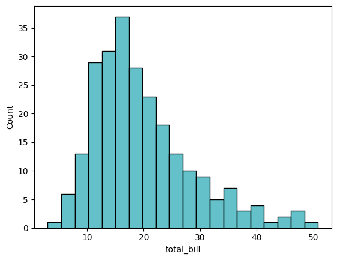
El valor por default es
kind="hist", por lo que no es necesario especificarlo.
Ejemplo de kdeplot#
kdeplot: Grafica distribuciones univariadas o bivariadas, usando la estimación de la densidad del kernel.
Patrones útiles:
# Agregar rug
sns.kdeplot(x='col', data=data, rug=True)
# Con relleno
sns.kdeplot(x='col', data=data, fill=True)
En este ejemplo se gráfica la distribución de total_bill.
# Definir grafica
sns.kdeplot(x='total_bill', data=tips, color=azul)
# Equivale a: sns.displot(x="total_bill", data=tips, kind="kde", color=azul)
# Imprimir gráfica
plt.show()
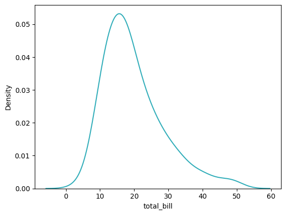
Matriz#
Funciones para crear gráficas matriciales como mapas de calor.
Función |
Descripción |
|---|---|
clustermap(data, …) |
Grafica datos rectangulares, como una matriz, que muestra datos jerarquicamente agrupados (grupos de datos similares los pone juntos, es como un heatmap ordenado por grupos similares) y la magnitud en colores. |
heatmap(data, …) |
Grafica datos rectangulares como una matriz que muestra la magnitud como colores. |
Ejemplo de heatmap#
heatmap: Grafica datos rectangulares como una matriz que muestra la magnitud como colores.
Tip
Es común que para graficar mapas de calor se usen las siguientes funciones:
pd.crosstab(): Calcula un aggregate de los valores de la combinación de dos variables categóricas.pd.corr(): Calcula la correlación en pares de variables cuantitativas.
Patrones útiles
# Añadir valor en cada celda
sns.heatmap(data, annot=True)
# Cambiar paleta y valor 0
sns.heatmap(data, cmap='cmap', center=float)
# Desactivar barra de color
sns.heatmap(data, cbar=False)
# Modificar valores mínimo y máximo de la barra de color
sns.heatmap(data, vmin=float, vmax=float)
En este ejemplo se calcula el mapa de calor de la correlación de las variables numéricas del dataset penguins.
# Crear mapa de calor
sns.heatmap(penguins.corr(numeric_only=True), cmap='BrBG', center=0)
# Imprimir gráfica
plt.show()
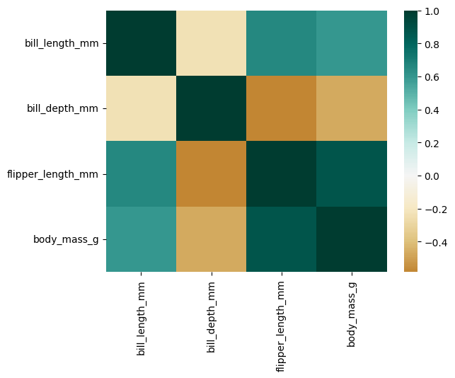
Regresión#
Funciones útiles para análisis de regresión.
Figure level
Función |
Descripción |
|---|---|
lmplot(data, …) |
Interfaz a nivel de figura para generar gráficos de datos y ajustar del modelo de regresión en un |
Parámetros:
x, y -
array-likeostr: Pueden ser vectores o etiquetas en data, que especifican los valores en los ejes x y y respectivamente. Una de ellas debe de ser una variable categórica. Dependiendo de en cuál eje se haya puesta la variable categórica la gráfica será horizontal o vertical.data -
DataFrame,ndarray,mappingosecuencia: Estructura de datos de entrada.kind -
str: Para especificar el tipo de gráfica:.Dispersión: ‘strip’, ‘swarm’.
Distribución: ‘boxplot’, ‘violinplot’, ‘boxenplot’.
Estimación: ‘pointplot’, ‘barplot’, ‘countplot’.
hue -
array-likeostr: Pueden ser vectores o etiquetas en data, es una variable categórica que es mapeada para determinar el color de los elementos de la gráfica.hue_order -
array-likedestr: Para indicar el orden de las categorías del argumento hue. Deben de ser los valores únicos ordenadas en orden que prefieras de hue.row, col -
array-likeostr: Pueden ser vectores o etiquetas en data, es una variable categórica para crear subplots de acuerdo a los valores de ésta. Si se usan ambos se creará una matriz.col_wrap -
int: Para indicar un número máximo de columnas de gráficas a realizar, si se supera se crearán filas. Es incompatible con el argumento row.x_estimator -
callable: Una función que de entrada reciba unvectory retorne unscalar. Pueden ser métodos deDataFRamecomo mean, median, etc.ci -
float: Tamaño del intervalo de confianza al agregar un estimator.order -
listdestr: Para modificar el orden de las categorías. Debe ser una lista con las categorías únicas ordenas en el orden deseado.col_order, row_order -
array-likedestr: Los elementos de la columna/fila para indicar cómo ordenar cada uno de los valores.height -
scalar: Altura de cada facet en pulgadas.aspect -
scalar: Radio entre la altura y ancho de cada facet en pulgadas.orient - {‘v’, ‘h’}: Orientación de la gráfica.
color -
color: Color de todos los elementos.palette -
string,list,dictomatplotlib.colors.Colormap: Métodos para escoger la paleta de colores, cuando se mapea con base a hue.legend -
bool: Para indicar si mostrar una leyenda.
Axes level
Función |
Descripción |
|---|---|
regplot(data=None, …) |
Gráfica datos (diagrama de dispersión) y ajusta un modelo de regresión. |
residplot(data=None, …) |
Grafica los residules de un modelo de regresión. |
Ejemplo de regplot#
regplot: Gráfica datos (diagrama de dispersión) y ajusta un modelo de regresión.
Patrones útiles:
# Modificar estilo de marker
sns.regplot(x="x", y="y", data=data, marker='sym')
# Ajustar polinomio de otro grado
sns.regplot(x="x", y="y", data=data, order=int)
# Jitter sobre el eje x
sns.regplot(x="x", y="y", data=data, x_jitter=float)
# Jitter sobre el eje y
sns.regplot(x="x", y="y", data=data, y_jitter=float)
# Estimador sobre eje x
sns.regplot(x="x", y="y", data=data, x_estimator=np.mean)
marker-marker code`: Tipo de marker en la gráfica.order-int: Para indicar el orden de regresión, para regresiones polinómicas.x_jitter,y_jitter, -int: Añade ruido a los valores x y y respectivamente. Útil para visualizar mejor puntos que se sobreenciman mucho.x_estimator-callable: Función que reciba unvectory retorne unscalar. Aplica esta función a cada valor único de x y grafica la estimación resultante. Es útil cuando x son valores categóricos ordenados.x_bins-intovector: Agrupa la variable x en bins discretos, estima la tendencia central y un intervalo de confianza por cada bin.
En este ejemplo se gráfica el diagrama de dispersión y la regresión lineal de bill_length_mm vs bill_depth_mm del dataset penguins.
# Definir grafica
sns.regplot(x="bill_length_mm", y="bill_depth_mm", data=penguins, color=azul)
# Equivale a: sns.lmplot(x="bill_length_mm", y="bill_depth_mm", data=penguins, color=azul)
# Imprimir gráfica
plt.show()
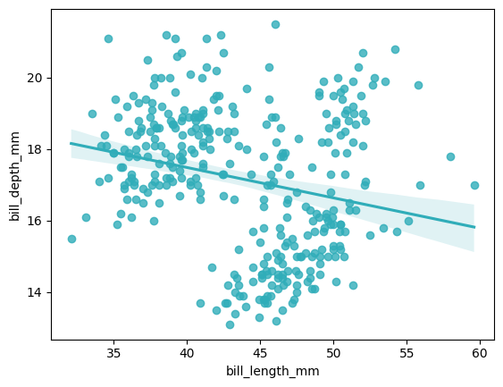
Relacionales#
Funciones útiles para visualizar la relación entre dos variales.
Figure level
Función |
Descripción |
|---|---|
relplot(data=None, …) |
Interfaz a nivel de figura para generar gráficos relacionales en un |
Parámetros comunes:
x, y -
array-likeostr: Pueden ser vectores o etiquetas en data, que especifican los valores en los ejes x y y respectivamente.data -
DataFrame,ndarray,mappingosecuencia: Estructura de datos de entrada.kind -
str: Para especificar el tipo de gráfica.‘scatter’: Diagrama de dispersión.
‘line’: Gráfico de líneas.
hue -
array-likeostr: Pueden ser vectores o etiquetas en data. Es una variable categórica que es mapeada para determinar el color de los elementos de la gráfica.size -
vectorostr: Un vector o una etiqueta en data, para realizar los puntos de diferente tamaño de acuerdo a los valores de esta variable.style -
vectorostr: Un vector o una etiqueta en data, para realizar los puntos de diferente estilo de acuerdo a los valores de esta variable.row, col -
array-likeostr: Pueden ser vectores o etiquetas en data, es una variable categórica para crear subplots de acuerdo a los valores de ésta. Si se usan ambos se creará una matriz.col_wrap -
int: Para indicar un número máximo de columnas de gráficas a realizar, si se supera se crearán filas cuando se usa col. Es incompatible con el parámetro row.col_order, row_order -
array-likedestr: Los elementos de la col o row para indicar cómo ordenar cada uno de los valores, se utilizan solo los valores únicos de esos argumentos.palette -
strin,list,dictomatplotlib.colors.Colormap: Métodos para escoger la paleta de colores, cuando se mapea con base a hue.hue_order -
array-likedestr: Para indicar el orden de las categorías del argumento hue. Deben de ser los valores únicos ordenadas en orden que prefieras de hue.legend - {‘auto’, ‘brief’, ‘full’, False}: Para indicar cómo mostrar una leyenda.
height -
scalar: Altura de cada facet en pulgadas.aspect -
scalar: Radio entre la altura y ancho de cada facet en pulgadas.
Patrones útiles:
# Gráfico de líneas con markers
sns.relplot(x="x", y="y", data=data, [kind], markers=True)
# Subplots en las columnas
sns.relplot(x="x", y="y", data=data, [kind], col='col')
# Subplots en las filas
sns.relplot(x="x", y="y", data=data, [kind], row='row')
# Modificar orden de las categorías de los subplots (ejm col)
category_order=['cat1', 'cat2', ...]
sns.relplot(x="x", y="y", data=data, [kind], col_order=category_order)
Axes level
Función |
Descripción |
|---|---|
lineplot(data=None, …) |
Realiza una gráfica de líneas. |
scatterplot(data=None, …) |
Grafica un diagrama de dispersión. |
Parámetros comunes:
x, y -
array-likeostr: Pueden ser vectores o etiquetas en data, que especifican los valores en los ejes x y y respectivamente.data -
DataFrame,ndarray,dictosecuencia: Estructura de datos de entrada.hue -
array-likeostr: Pueden ser vectores o etiquetas en data. Es una variable categórica que es mapeada para determinar el color de los elementos de la gráfica, estableciendo la leyenda de la gráfica.size -
vectorostr: Un vector o un etiqueta en data, para realizar los puntos de diferente tamaño de acuerdo a los valores de esta variable.style -
vectorostr: Un vector o un etiqueta en data, para realizar los trazos de diferente estilo de acuerdo a los valores de esta variable.palette -
str,list,dictomatplotlib.colors.Colormap: Métodos para escoger la paleta de colores, cuando se mapea con base a hue.str: Nombre de una paleta de colores.list: Una lista con un color por cada valor único de la variable definida en hue.dict: Un diccionario con keys como los valores únicos de la varaible definida en hue y como values un color.
hue_order -
array-likedestr: Para indicar el orden de las categorías del argumento hue. Deben de ser los valores únicos ordenadas en el orden que se prefiera de hue.alpha -
float: Opacidad de los trazos.
Ejemplo de scatter#
scatterplot: Grafica un diagrama de dispersión.
Patrones útiles:
# Gráfico con leyenda
sns.scatterplot(x="x", y="y", data=data, hue='hue')
# Modificar estilo de markers con base a variable categórica
sns.scatterplot(x="x", y="y", data=data, style='style')
# Modificar estilo de marker
sns.scatterplot(x="x", y="y", data=data, marker='+')
# Modificar transparencia de marker
sns.scatterplot(x="x", y="y", data=data, alpha=alpha)
# Modificar tamaño de markers con base a variable categórica
sns.scatterplot(x="x", y="y", data=data, size='size')
En este ejemplo se crea un diagrama de dispersión entre bill_length_mm y bill_depth_mm, además se crea una leyenda por sex y se modifica el estilo del marcador por species.
# Crear gráfica
sns.scatterplot(x="bill_length_mm",
y="bill_depth_mm",
data=penguins,
hue='sex',
style='species',
palette={'Male': azul, 'Female': cafe})
# Equivale a:
# sns.relplot(x="bill_length_mm", y="bill_depth_mm", data=penguins, hue='sex', style='species', kind="scatter")
# Imprimir gráfica
plt.show()
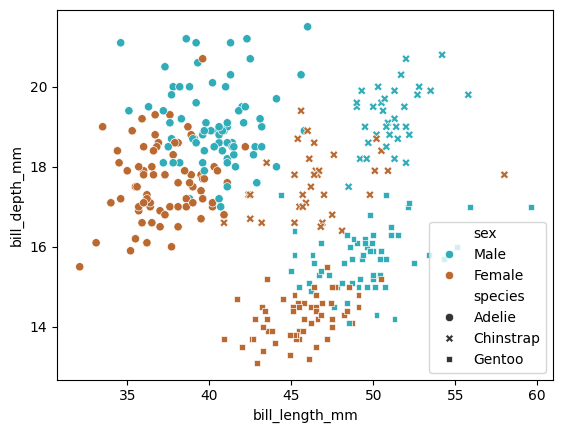
Ejemplo de line#
lineplot: Realiza una gráfica de líneas.
Patrones útiles:
# Gráfico de líneas con markers
sns.lineplot(x="x", y="y", data=data, markers=True)
# Gráfico con leyenda
sns.lineplot(x="x", y="y", data=data, hue='hue')
# Modificar estilo de trazos con base a variable categórica
sns.lineplot(x="x", y="y", data=data, style='style')
# Modificar transparencia de trazos
sns.lineplot(x="x", y="y", data=data, alpha=alpha)
# Desactivar estilo de líneas
sns.lineplot(x="x", y="y", data=data, dashes=False)
# Modificar estimador
sns.lineplot(x="x", y="y", data=data, estimator=median)
# Modificar intervalo de confianza**
sns.lineplot(x="x", y="y", data=data, errorbars=('ci', 95))
Notas:
dashes -
bool,list,dict: Para indicar cómo dibujar las líneas de las gráficas.bool: Para indicar que se use lo estilos por default o que no se usen líneas.list: Una lista de los tipo de línea.dict: Para mapear un estilo a cada gráfica.
markers -
bool,list,dict: Para indicar cómo dibujar los markers de las gráficas.bool: Para indicar que se use lo estilos por default o que no se usen markers.list: Una lista de los tipo de markers.dict: Para mapear un estilo a cada gráfica.
estimator -
pandas methodocallable: Una función que de entrada reciba unarray-likey retorne unscalar. Puede ser el nombre de un método de data como mean, median, etc.errorbar -
str,tuple,callableoNone: Tipo de barras de errores.str- {‘ci’, ‘pi’, ‘se’, or ‘sd’}: Nombre del método.tuple: Tupla de dos elementos con el nombre del método y el nivel del parámetro, por ejemplo('ci', 95), es un intervalo de confianza del 95%.callble: Función que recibe unarray-likey retorna un tuple(min, max)con el intervalo.None: Para ocultar las barras de errores.
En este ejemplo se grafica el tip para los días, con la leyenda por smoker.
# Crear el gráfico de líneas
sns.lineplot(x="day", y="tip", hue="smoker", data=tips,
palette={'Yes': azul, 'No': cafe})
# Equivale a: sns.relplot(tips, x='day', y='tip', hue="smoker", kind="line", errorbar=None)
# Imprimir gráfica
plt.show()
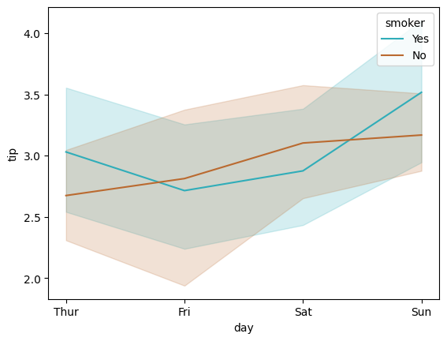
Personalización#
Para personalizar gráficas en seaborn dependerá del tipo retornado por la función:
Funciones a nivel de figura: Para ver cómo personalizar las clases retornadas por funciones a nivel de figura revisar los métodos de la clase en cuestión. Tener en cuenta que todas las clases de
seabornheredan métodos de la claseFiguredematplotlib, por lo que los métodos de esta clase también se pueden usar para personalizar gráficas enseaborn.Funciones a nivel de eje: Las funciones a nivel eje retornar instancias de la clase
Axesdematplotlib, por lo que se pueden usar sus métodos de personalización para personalizar estas gráficas.
# Ejemplo de customización a nivel de ejes:
fig, ax = plt.subplots()
sns.axes_function(df['col'], ax=ax)
ax.set(xlabel="x label", ylabel="y label", title="Title")
Nivel de ejes:
En este ejemplo se uso la interfaz orienta a objetos para crear el objetos ax. También se podría asignar la función a una dummy variable y usar los métodos de
Axesen esa variable:_ = sns.axes_function(df['col'])
_.set(xlabel="x label", ylabel="y label", title="Title")En este ejemplo se uso el método
Axes.set(), pero se podría usar cualquier otro método.
Las siguientes funciones se pueden utilizar para realizar ciertas acciones a las gráficas:
Otras funciones útiles para manipulación de las gráficas, relacionadas con eliminar los ejes y reubicar la leyenda a otra posición.
Función |
Descripción |
|---|---|
despine(fig=None, ax=None, top=True, right=True, left=False, bottom=False, offset=None, trim=False) |
Remueve los ejes (spines) de una gráfica (el cuadrado que rodea la gráfica), por default remueve el superior y el derecho. |
move_legend(obj, loc, **kwargs) |
Recrea la leyenda de una gráfica en una nueva ubicación. |
Paletas de Colores#
Funciones útiles para retornar o manipular la paleta de colores de las gráficas.
Función |
Descripción |
|---|---|
blend_palette(colors, n_colors=6, as_cmap=False, input=’rgb’) |
Crea una paleta que difumina entre los elementos de un |
color_palette(palette=None, n_colors=None, desat=None, as_cmap=False) |
Retorna un |
crayon_palette(colors) |
Crea una paleta con nombres de colores de crayones Crayola. |
cubehelix_palette(n_colors=6, start=0, rot=0.4, gamma=1.0, hue=0.8, light=0.85, dark=0.15, reverse=False, as_cmap=False) |
Crea una paleta secuencial a partir del sistema cubehelix. |
dark_palette(color, n_colors=6, reverse=False, as_cmap=False, input=’rgb’) |
Crea una paleta secuencial que difumina de oscuro a |
diverging_palette(h_neg, h_pos, s=75, l=50, sep=1, n=6, center=’light’, as_cmap=False) |
Crea una paleta divergente entre dos colores HUSL. |
hls_palette(n_colors=6, h=0.01, l=0.6, s=0.65, as_cmap=False) |
Retorna tonos (h) con luminosidad (l) y saturación (s) constantes en el sistema HLS. |
husl_palette(n_colors=6, h=0.01, s=0.9, l=0.65, as_cmap=False) |
Retorna tonos (h) con luminosidad (l) y saturación (s) constantes en el sistema HUSL. |
light_palette(color, n_colors=6, reverse=False, as_cmap=False, input=’rgb’) |
Crea una paleta secuencial que difumina de claro a |
mpl_palette(name, n_colors=6, as_cmap=False) |
Retorna una paleta o colormap del registro de |
set_palette(palette, n_colors=None, desat=None, color_codes=False) |
Establece el ciclo de color |
xkcd_palette(colors) |
Crea una paleta con nombres de colores de tipo xkcd. |
Notas de set_palette#
set_palette: Establece la gama de colores de las gráficas. Se utiliza antes de la gráfica.
# Establecer un estilo
set_palette(palette, n_colors=None, desat=None, color_codes=False)
Parámetros:
palette: Define la paleta de colores. Puede ser:
Nombre de una paleta de
seaborn: {‘deep’, ‘muted’, ‘bright’, ‘pastel’, ‘dark’, ‘colorblind’}. Cada paleta tiene 10 colores, existen sus variantes con 6 colores si se añade un 6 al final del nombre, por ejemplo ‘deep6’.Nombre de un colormap de
matplotlib. Ver ColorMap.Un
sequencede colores en cualquier formato quematplotlibacepte. Ver Colores.{‘hls’, ‘huls’}.
‘ch:<cubehelix arguments>’.
‘light:<color>’, ‘dark:<color>’, ‘blend:<color>,<color>’.
n_colors -
int: Número de colores en la paleta.desat -
float: Proporción para desaturar cada color.
Paleta de colores de seaborn:
# Imprimir cada paleta de colores
for p in sns.palettes.SEABORN_PALETTES:
sns.set_palette(p)
sns.palplot(sns.color_palette())
plt.title(p)
plt.show()
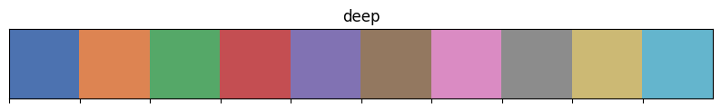
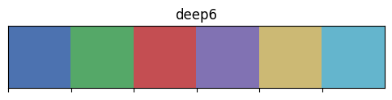
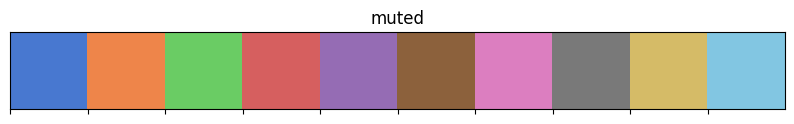
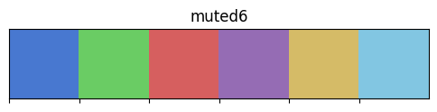
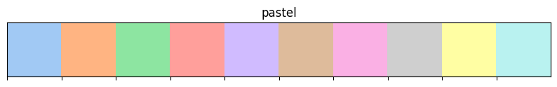
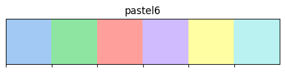
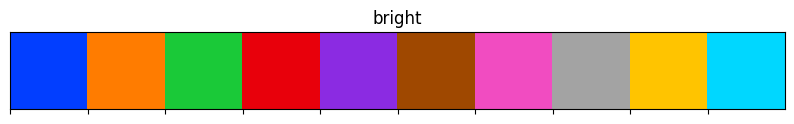
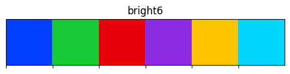
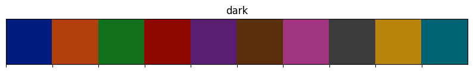
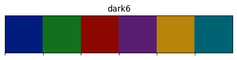
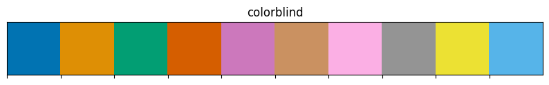
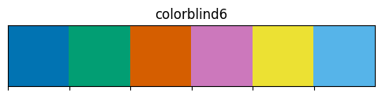
Widgets#
Funciones útiles para inicializar widgets interactivos.
Función |
Descripción |
|---|---|
choose_colorbrewer_palette(data_type, as_cmap=False) |
Selecciona una paleta del ColorBrewer |
choose_cubehelix_palette(as_cmap=False) |
Inicie un widget interactivo para crear una paleta cubehelix secuencial. |
choose_dark_palette(input=’husl’, as_cmap=False) |
Inicie un widget interactivo para crear una paleta secuencial oscura. |
choose_diverging_palette(as_cmap=False) |
Inicie un widget interactivo para elegir una paleta de colores divergente. |
choose_light_palette(input=’husl’, as_cmap=False) |
Inicie un widget interactivo para crear una paleta de colores secuencial light. |
Temas#
Funciones para modificar el estilo de las gráficas como colores, escalas, establecer elementos personalizables, etc.
Función |
Descripción |
|---|---|
axes_style(style=None, rc=None) |
Recupera los parámetros que controlan el estilo general de los gráficos. |
plotting_context(context=None, font_scale=1, rc=None) |
Recupera los parámetros que controlan la escala de los elementos de la gráfica. |
Restaurs todos los parámetros RC a la configuración predeterminada. |
|
Restaurz todos los parámetros RC a la configuración original (respeta el RC personalizado). |
|
set(*args, **kwargs) |
Alias para |
set_color_codes(palette=’deep’) |
Modifica la forma en que se interpretan los shorthands de color de |
set_context(context=None, font_scale=1, rc=None) |
Establece los parámetros que controlan la escala de los elementos de la gráfica. Sirve para modificar el tamaño y grosor de las etiquetas, las líneas y otros elementos. |
set_style(style=None, rc=None) |
Establece los parámetros que controlan el estilo general de los gráficos, como agregar una rendija, o los colores del fondo. Se pone antes de realizar cualquier gráfica. |
set_theme(context=’notebook’, style=’darkgrid’, palette=’deep’, font=’sans-serif’, font_scale=1, color_codes=True, rc=None) |
Establece múltiples parámetros del tema en un paso. Afecta también las gráficas de |
Notas de set_context#
set_context: Establece los parámetros que controlan la escala de los elementos de la gráfica. Sirve para modificar el tamaño y grosor de las etiquetas, las líneas y otros elementos.
# Establecer un contexto
set_context(context=None, font_scale=1, rc=None)
Parámetros:
context -
dict,Noneo {‘paper’, ‘notebook’, ‘talk’, ‘poster’}: Diccionario de parámetos o algún contexto preestablecido.De menor a mayor: ‘paper’, ‘notebook’, ‘talk’ (útil en presentaciones), ‘poster’.
font_scale -
float: Factor para escalar el tamaño de manera independiente, usando como base el estilo ‘notebook’.rc -
dict: Mapeo de parámetros a modificar los valores en el estilo actual. Para conocer los parámetros y sus valores, del estilo actual, utilizar:sns.axes_style
Notas de set_style#
# Establecer un estilo
sns.set_style(style=None, rc=None)
style -
dicto {‘darkgrid’, ‘whitegrid’, ‘dark’, ‘white’, ‘ticks’}: Estilo preconfigurado.rc -
dict: : Mapeo de parámetros a modificar los valores en el estilo actual. Para conocer los parámetros y sus valores, del estilo actual, utilizar:sns.axes_style
# Crear gráfica para cada tipo de estilo
for style in ['white','dark','whitegrid','darkgrid','ticks']:
sns.set_style(style)
_ = sns.histplot(tips['total_bill'], color=azul)
_.set_title(style)
plt.show()
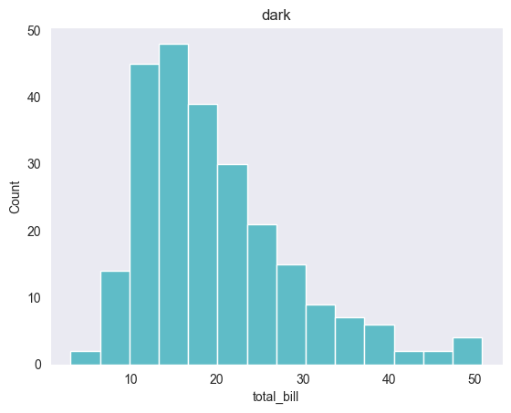
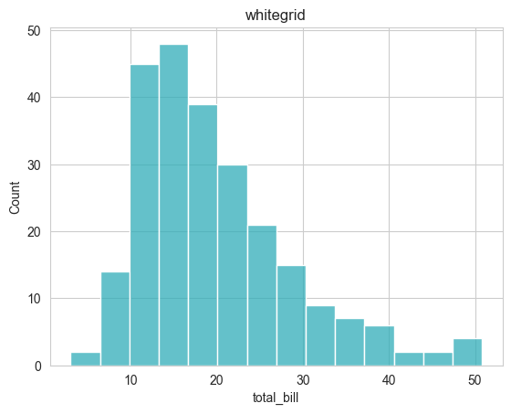
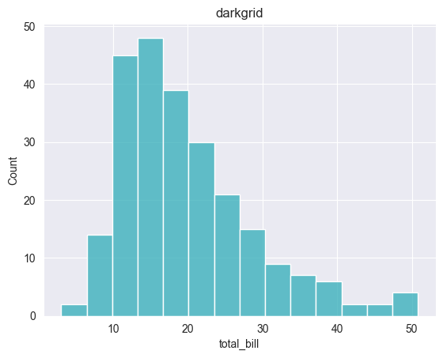
Utilidades#
Otras funciones útiles para manipulación de las gráficas.
Función |
Descripción |
|---|---|
desaturate(color, prop) |
Disminuye el canal de saturación de un color en un porcentaje dado. |
despine(fig=None, ax=None, top=True, right=True, left=False, bottom=False, offset=None, trim=False) |
Remueve los ejes (spines) de una gráfica (el cuadrado que rodea la gráfica), por default remueve el superior y el derecho. |
get_data_home(data_home=None) |
Retorna la ruta al directorio caché, por ejemplo, datasts. |
Retorna el nombre de todos los datasets disponibles en el repositorio de |
|
load_dataset(name, cache=True, data_home=None, **kws) |
Carga a la sesion un dataset del repositiorio de datasets de |
move_legend(obj, loc, **kwargs) |
Recrea la leyenda de una gráfica en una nueva ubicación. |
saturate(color) |
Retorna un color completamente saturado con el mismo hue (tono). |
set_hls_values(color, h=None, l=None, s=None) |
Manipula de forma independiente los canales h (tono), l (brillo) o s (saturación) de un color. |
Clases#
En esta sección se presentan algunas clases relacionadas con hacer gráficas múltiples en una sola figura. Existen tres clases con tales fines:
FacetGrid: Permite crear gráficas múltiples para cada valor de una variable categórica.JointGrid: Permite crear gráficas múltiples para la variables bivariadas, al mismo tiempo que se grafican sus marginales.PairGrid: Permite crear gráficas múltiples para la combinación de dos variables categegóricas.
FacetGrid#
Se utiliza para crear una malla de gráficas, cada una mostrando un subcojunto de los datos con base a los valores de una o más variables categóricas. Algunas de sus características son:
Permite utilizar 4 tipos de gráficas diferentes.
Permite establecer la variables categóricas tanto en las columnas, como en las filas.
Función |
Descripción |
|---|---|
FacetGrid(data, …) |
Crea la cuadricula para múltiples gráficas de relaciones condicionales (usar los valores de variables categóricas para separar por filas y columnas). Esta función no crea las gráficas como tal, solo prepara la cuadricula, para agregar las gráficas es necesario usar los métodos |
Parámetros
data-DataFrame: Estructura de datos de entrada.row,col-str: Etiquetas en data, es una variable categórica para crear subplots de acuerdo a los valores de ésta. Si se usan ambos se creará una matriz.hue-str: Etiquetas en data, es una variable categórica que es mapeada para determinar el color de los elementos de la gráfica.col_wrap-int: Para indicar un número máximo de columnas de gráficas a realizar, si se supera se crearán filas. Es incompatible con el parámetro row.height-scalar: Altura de cada facet en pulgadas.aspect-scalar: Proporción entre la altura y ancho de cada facet en pulgadas.palette-str,list,dict: Métodos para escoger la paleta de colores, cuando se mapea con base a hue.hue_order-listdestr: Para indicar el orden de las categorías del argumento hue. Deben de ser los valores únicos ordenadas en orden que prefieras de hue.col_order,row_order-listdestr: Los elementos de la columna/fila para indicar cómo ordenar cada uno de los valores.
Patrones útiles
Caution
Algunos patrones aquí prensentados utilizan métodos de objetos de matplotlib.
# Asignar gráfica a una variable
g=sns.relplot()
# Cambiar título de la figura
g.fig.suptitle("New Title", y=1.03)
# Cambiar títulos de los _subplots_ (ejm cols)
g.set_titles("Template {col_name}")
# Cambiar etiquetas de los ejes
g.set(xlabel="New X Label", ylabel="New Y Label")
Uso#
Para usar esta clase es necesario indicar los datos y las variables categóricas sobre las cuales de creara el grid en las columnas y/o filas con col y row respectivaemente. Posteriormente se debe usar el método FacetGrid.map() para añadir las gráficas, se debe indicar la función y pasar los argumentos de la misma.
# Preparar FacetGrid
g = sns.FacetGrid(data, col="col", row='row')
# Aplicar gráficas
g.map(sns.axes_plot, **kwargs)
**kwargs son argumentos de axes_function.
Ejemplo
# Importar dataset
exercise = sns.load_dataset("exercise")
# Preparar FacetGrid
g = sns.FacetGrid(exercise, col="kind", row='diet')
# Aplicar gráficas
g.map(sns.histplot, 'pulse', color=azul)
<seaborn.axisgrid.FacetGrid at 0x12ff8a250>
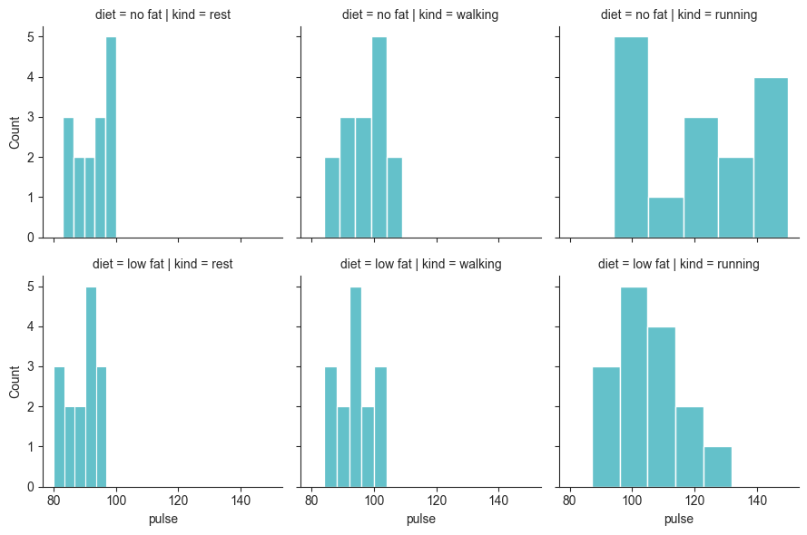
Atributos#
Atributos de FacetGrid.
Atributos |
Descripción |
|---|---|
|
El objeto |
|
Una matriz de los objetos |
|
Un diccionario de los nombres de facets con su correspondiente |
Generator de nombres y subconjuntos de datos para cada facet. |
|
|
El objeto |
|
El objeto |
Métodos#
Métodos de FacetGrid.
Método |
Descripción |
|---|---|
FacetGrid.__init__(data, *[, row, col, hue, col_wrap, …]) |
Inicializa la figura |
FacetGrid.add_legend([legend_data, title, …]) |
Añade una leyenda, posiblemente colocándola fuera de los ejes y cambiando el tamaño de la figura. |
FacetGrid.apply(func, *args, **kwargs) |
Pasa la cuadrícula a una función proporcionada por el usuario y retorna self. |
FacetGrid.despine(**kwargs) |
Remueve los spines de los ejes de las facets. |
FacetGrid.facet_axis(row_i, col_j[, modify_state]) |
Activa el eje identificado por los índices y lo retorna. |
FacetGrid.map(func, *args, **kwargs) |
Aplica una función de trazado al subconjunto de datos de cada facet. |
FacetGrid.map_dataframe(func, *args, **kwargs) |
Similar a |
FacetGrid.pipe(func, *args, **kwargs) |
Pasa la cuadrícula a una función proporcionada por el usuario y devuelve su valor. |
FacetGrid.refline(*[, x, y, color, linestyle]) |
Agrega una(s) línea(s) de referencia a cada facet. |
FacetGrid.savefig(*args, **kwargs) |
Almacena una imagen de la gráfica. |
FacetGrid.set(**kwargs) |
Establece atributos en cada subplot |
FacetGrid.set_axis_labels([x_var, y_var, clear_inner]) |
Establece etiquetas de los ejes en la columna izquierda y en la fila inferior de la cuadrícula. |
FacetGrid.set_titles([template, row_template, …]) |
Dibuja títulos encima de cada facet o en los márgenes de la cuadrícula. |
FacetGrid.set_xlabels([label, clear_inner]) |
Establece las etiquetas en el eje x, en la fila inferior de la cuadrícula. |
FacetGrid.set_xticklabels([labels, step]) |
Establece las etiquetas de los ticks del eje x de la cuadrícula. |
FacetGrid.set_ylabels([label, clear_inner]) |
Establece las etiquetas en el eje y, en la columna izquierda de la cuadrícula. |
FacetGrid.set_yticklabels(labels=None, **kwargs) |
Establece las etiquetas de los ticks del eje y en la columna izquierda de la cuadrícula |
FacetGrid.tick_params(axis=’both’, **kwargs) |
Modifica los ticks, las etiquetas de los ticks y las líneas de cuadrícula. |
FacetGrid.tight_layout(*args, **kwargs) |
Llama a |
JointGrid#
Gráficos conjuntos (relación bivariada + distribuciones marginales).
Función |
Descripción |
|---|---|
JointGrid(data=None, …) |
Crea la cuadrícula para generar un gráfico bivariado con gráficos univariados marginales. Esta función no crea las gráficas como tal, solo prepara la cuadricula para agregar las gráficas es necesario usar los métodos |
jointplot(data=None, …) |
Grafica la distribución bivariada y las marginales. El tipo de la gráfica bivariada se puede especificar, las marginales serán histogramas o kde, dependiendo de los argumentos. |
Uso#
Para usar esta clase es necesario indicar los datos y las variables. Posteriormente se deben usar los métodos JointGrid.plot(), JointGrid.plot_joint() o JointGrid.plot_marginals() para añadir las gráficas.
# Preparar JointGrid
g = sns.JointGrid(data, x='col', y='col')
# Aplicar gráficas
g.plot(sns.axes_function_join, sns.axes_function_marginal)
# Preparar JointGrid
g = sns.JointGrid(data, x='col', y='col')
# Aplicar gráfica a la diagonal
g.plot_joint(sns.axes_function_join, **kwargs)
# Aplicar gráfica fuera de la diagonal
g.plot_marginals(sns.axes_function_marginal, **kwargs)
**kwargs son argumentos de axes_function.
Ejemplo
# Importar dataset
iris = sns.load_dataset("iris")
# Preparar JointGrid
g = sns.JointGrid(data=iris, x="sepal_length", y="petal_length")
# Aplicar gráfica a la diagonal
g.plot_joint(sns.scatterplot, color=cafe)
# Aplicar gráfica fuera de la diagonal
g.plot_marginals(sns.histplot, kde=False, color=azul)
<seaborn.axisgrid.JointGrid at 0x12fedd6d0>
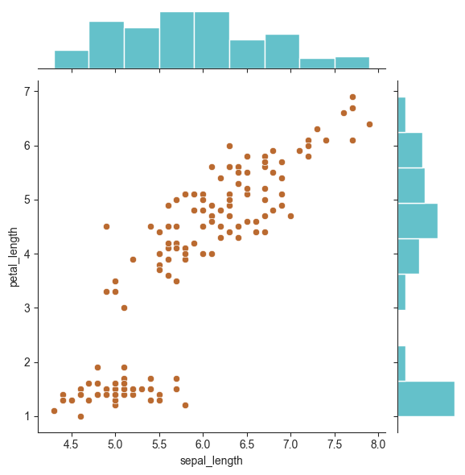
Atributos#
Atributos de la clase JointGrid.
Método |
Descripción |
|---|---|
figure() |
Retorna el objeto |
Métodos#
Métodos de la clase JointGrid.
Método |
Descripción |
|---|---|
init([data, x, y, hue, height, ratio, …]) |
ConfigurA la cuadrícula de subplots y almacena los datos internamente para facilitar el graficado. |
apply(func, *args, **kwargs) |
Pasa la cuadrícula a una función proporcionada por el usuario y retorna self. |
pipe(func, *args, **kwargs) |
Pasa la cuadrícula a una función proporcionada por el usuario y devuelve su valor. |
plot(joint_func, marginal_func, **kwargs) |
Genera la gráfica pasando funciones para los |
plot_joint(func, **kwargs) |
Grafica un gráfico bivariado en los |
plot_marginals(func, **kwargs) |
Genera los gráficos univariados en cada eje marginal. |
refline(*[, x, y, joint, marginal, color, …]) |
Agrega una(s) línea(s) de referencia a cada facet. |
savefig(*args, **kwargs) |
Almacena una imagen de la gráfica. |
set(**kwargs) |
Establece atributos en cada subplot |
set_axis_labels([xlabel, ylabel]) |
Establece etiquetas de los ejes en la columna izquierda y en la fila inferior de la cuadrícula. |
PairGrid#
Matrices de gráficos bivariados entre todas las combinaciones de variables numéricas.
Función |
Descripción |
|---|---|
PairGrid(data, …) |
Crea la cuadricula para múltiples gráficas de relaciones en pares. Esta función no crea las gráficas como tal, solo prepara la cuadricula, para agregar las gráficas es necesario usar los métodos |
pairplot(data, …) |
Grafica relaciones en pares de variables de un dataset, generando una matriz de gráficas. Se puede especificar tanto el tipo de gráfica de la relación de cada par, como las de la diagonal de la matriz. |
Uso#
Para usar esta clase es necesario indicar los datos y las variables categóricas sobre las cuales de creara el grid en las columnas y filas con vars. Posteriormente se deben usar los métodos PairGrid.map(), PairGrid.map_diag() o PairGrid.map_offdiag() para añadir las gráficas.
# Preparar PairGrid
g = sns.FacetGrid(data, vars=['row', 'col'])
# Aplicar misma gráfica a todas las celdas
g.map(sns.axes_function, **kwargs)
# Preparar PairGrid
g = sns.FacetGrid(data, vars=['row', 'col'])
# Aplicar gráfica a la diagonal
g.map_diag(sns.axes_function, **kwargs)
# Aplicar gráfica fuera de la diagonal
g.map_offdiag(sns.axes_function, **kwargs)
**kwargs son argumentos de axes_function.
Ejemplo
# Preparar PairGrid
g = sns.PairGrid(iris)
# Aplicar gráfica a la diagonal
g.map_diag(sns.kdeplot, color=cafe)
# Aplicar gráfica fuera de la diagonal
g.map_offdiag(sns.scatterplot, color=azul)
<seaborn.axisgrid.PairGrid at 0x12ff37250>
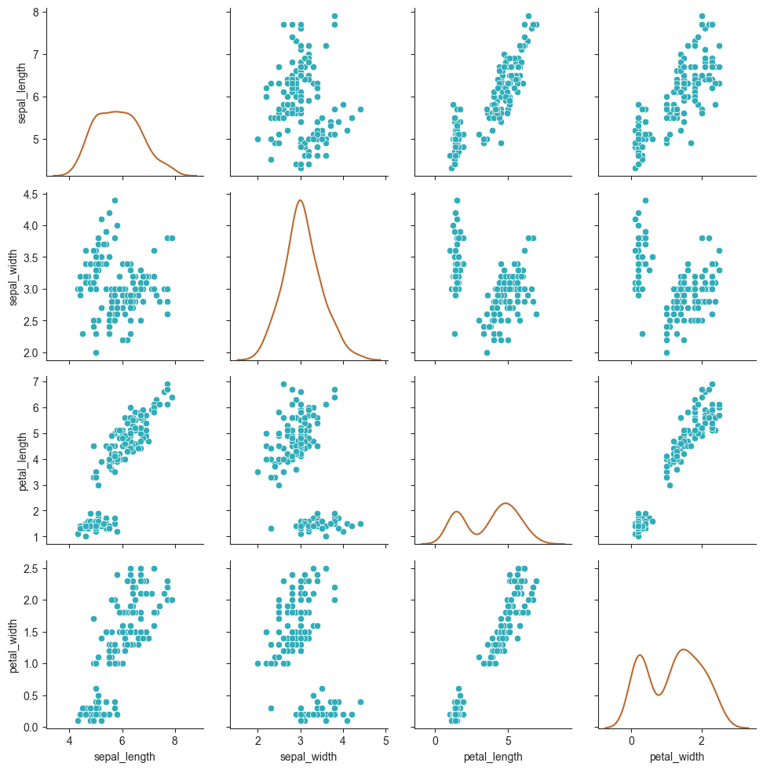
Atributos#
Atributos de la clase PairGrid.
Método |
Descripción |
|---|---|
Retorna el objeto |
|
El objeto |
Métodos#
Métodos de la clase PairGrid.
Método |
Descripción |
|---|---|
PairGrid.init(data, *[, hue, vars, x_vars, …]) |
Inicializa la figura |
PairGrid.add_legend([legend_data, title, …]) |
Añade una leyenda, posiblemente colocándola fuera de los ejes y cambiando el tamaño de la figura. |
PairGrid.apply(func, *args, **kwargs) |
Pasa la cuadrícula a una función proporcionada por el usuario y retorna self. |
PairGrid.map(func, **kwargs) |
Grafica con la misma función en cada subplot. |
PairGrid.map_diag(func, **kwargs) |
Gráfica con una función univariada en cada subplot diagonal. |
PairGrid.map_lower(func, **kwargs) |
Gráfica con una función bivariada en los subplots diagonales inferiores. |
PairGrid.map_offdiag(func, **kwargs) |
Gráfica con una función bivariada en los subplots fuera de la diagonal. |
PairGrid.map_upper(func, **kwargs) |
Gráfica con una función bivariada en los subplots diagonales superiores. |
PairGrid.pipe(func, *args, **kwargs) |
Pasa la cuadrícula a una función proporcionada por el usuario y devuelve su valor. |
PairGrid.savefig(*args, **kwargs) |
Almacena una imagen de la gráfica. |
PairGrid.set(**kwargs) |
Establece atributos en cada subplot |
PairGrid.tick_params([axis]) |
Modifica los ticks, las etiquetas de los ticks y las líneas de cuadrícula. |
PairGrid.tight_layout(*args, **kwargs) |
Llama a |